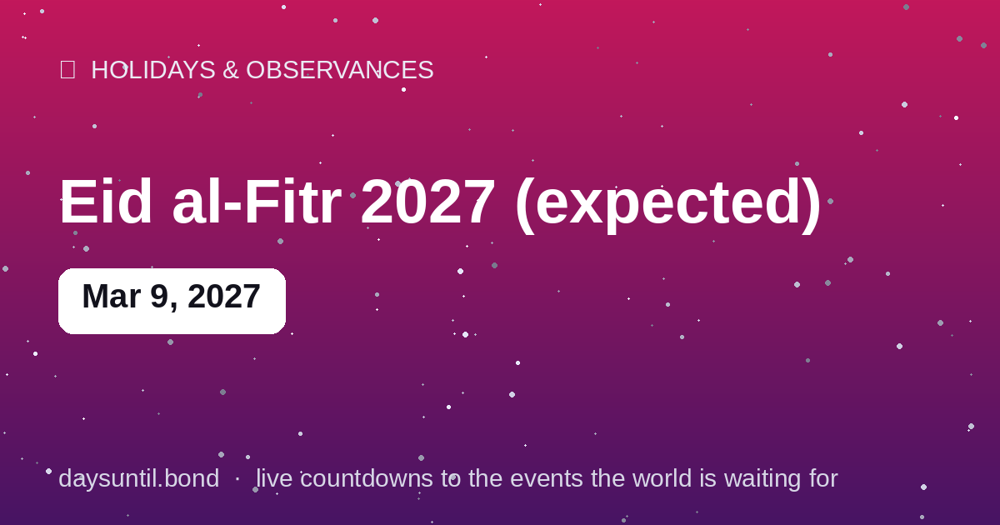

When Is Eid al-Fitr 2027?
Eid al-Fitr 2027 (expected) falls on Tuesday, March 9, 2027.
As of November 22, 2026: 107 days to go — 15 weeks and 2 days, 77 weekdays (30 weekend days), about 2,568 hours.

Quick facts
| Expected date | Tuesday, March 9, 2027 |
|---|---|
| Hijri date | 1 Shawwal 1448 |
| Date status | Tentative; local moon sighting may shift by one day |
About Eid al-Fitr 2027 (expected)
Eid al-Fitr 2027 is tentatively expected on Tuesday, March 9, 2027 (1 Shawwal 1448) in the Tunisia and Umm al-Qura calendars. Local moon sighting can move the observance by one day.
The countdown uses March 9 as the current planning date. Check the announcement from your local religious authority closer to the festival.
Why the Eid al-Fitr 2027 date is marked expected
This calendar currently lists Tuesday, March 9, 2027 as the expected date for Eid al-Fitr. The Tunisia 2027 holiday calendar lists March 9 as the first day, while March 10 and 11 appear as additional public-holiday days. The Islamic calendar is lunar, and the start of Shawwal is traditionally determined by the sighting of the new crescent or by an accepted calculation method used by the relevant religious authority.
That means a date forecast is useful for planning but is not a universal guarantee. Countries, communities and local religious bodies can announce different dates depending on their method and the visibility of the crescent. Check the announcement from the authority followed by your community before finalising travel or family arrangements.
What Eid al-Fitr marks
Eid al-Fitr marks the end of Ramadan, the month of fasting. It begins the month of Shawwal and is observed with a special communal prayer, family visits, charitable giving and festive meals. Customs differ across countries and families, so there is no single menu or celebration style that represents everyone.
Many communities give Zakat al-Fitr before the Eid prayer so that people in need can share in the celebration. The amount, eligible recipients and local collection arrangements should be checked with a trusted local mosque or charity.
How the date can shift by a day
A lunar month can last 29 or 30 days. If the crescent is not sighted under the method used by a local authority, Ramadan may complete 30 days and Eid begins the following day. Weather, horizon visibility and the authority's adopted criteria can therefore affect the announced date.
A website countdown cannot replace that local announcement. We label the date as expected so visitors can distinguish a planning estimate from a confirmed religious calendar.
Planning around Eid
If you are travelling, check transport schedules and public-holiday notices for the destination country; many places adjust opening hours or provide additional prayer and event arrangements. If you are coordinating with relatives abroad, confirm the date and prayer time in their city rather than assuming that one country's announcement applies everywhere.
For work or school planning, use the expected date as an early reminder and update your calendar when the local authority confirms the observance. This is especially important when a day off depends on the official announcement.
Eid al-Fitr and the end of Ramadan
Eid al-Fitr is distinct from Eid al-Adha, which occurs later in the Islamic year during the Hajj season. The two festivals have different religious contexts and should not be confused when checking dates or public-holiday arrangements.
The celebration commonly lasts one to three days depending on local custom and official holidays. The first day is the key date used by this countdown; the wider holiday period may be longer in some countries.
How to use this countdown responsibly
Treat March 9, 2027 as a forecast, not a promise. The timer counts to the date currently stored in the calendar, but the date may be updated if a recognised local announcement changes the observance.
If you notice that your local authority has announced a different date, contact us with the location and a link to the official announcement so the page can be reviewed.
Your Eid al-Fitr 2027 (expected) countdown milestones
It is easier to plan against fixed points than against a number that moves. These are the dates on which the countdown to Eid al-Fitr 2027 (expected) passes each marker between now and the day itself — the last one falls on Monday 08 March, when there will be 1 day left.
| Milestone | Day | Date | Remaining |
|---|---|---|---|
| 100 days | Sunday | 29 November 2026 | 100 days to go |
| 50 days | Monday | 18 January 2027 | 50 days to go |
| 30 days | Sunday | 07 February 2027 | 30 days to go |
| 14 days | Tuesday | 23 February 2027 | 14 days to go |
| 7 days | Tuesday | 02 March 2027 | 7 days to go |
| 3 days | Saturday | 06 March 2027 | 3 days to go |
| 1 days | Monday | 08 March 2027 | 1 day to go |
How the remaining time breaks down
107 days is the headline, but it is rarely the number that helps. 77 of those are weekdays and 30 fall on a weekend, which is the split that matters if you are planning around work. It is 15 weeks and 2 days, or roughly 3.5 months, or about 2,568 hours.
| Unit | Until Eid al-Fitr 2027 (expected) |
|---|---|
| Days | 107 |
| Weeks | 15 weeks and 2 days |
| Months (approx) | 3.5 |
| Weekdays | 77 |
| Weekend days | 30 |
| Hours | 2,568 |
| Sleeps | 107 |
Working days are Monday to Friday and do not subtract public holidays, which vary by country and employer — the full month-by-month split is on our weekday page for Eid al-Fitr 2027 (expected).